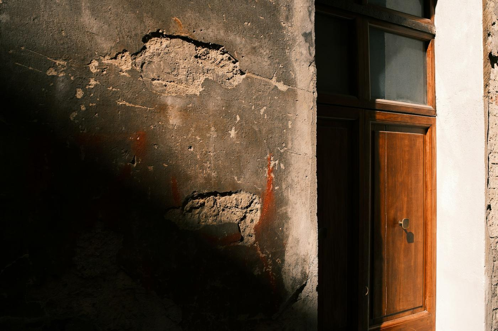
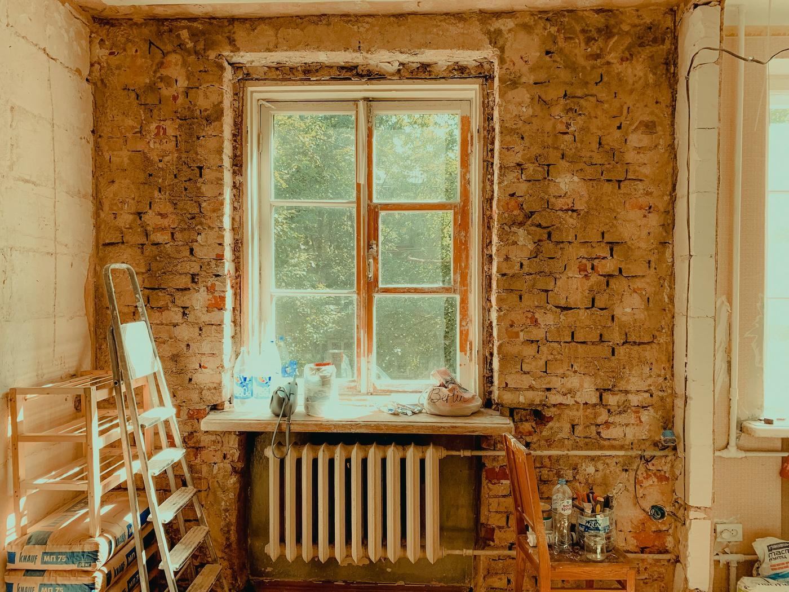
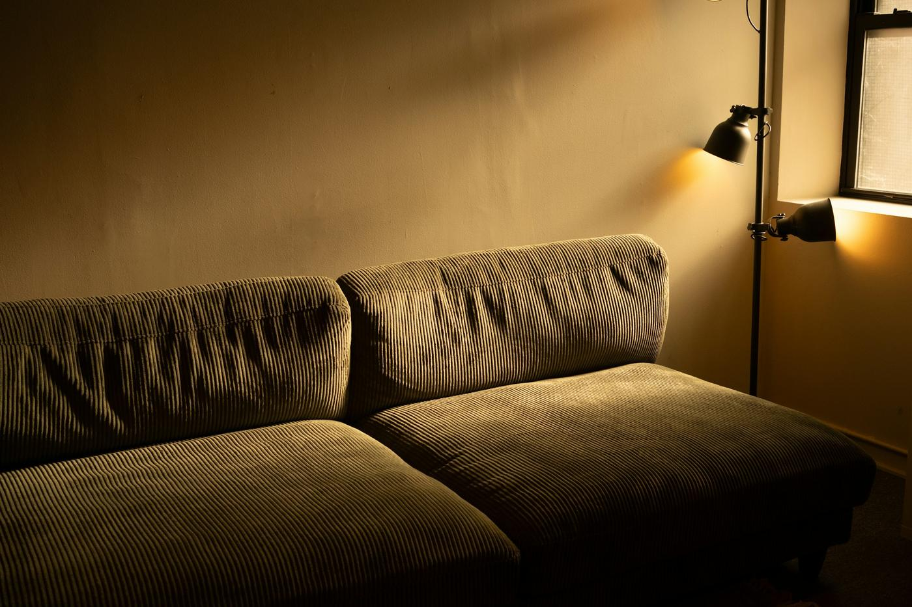

Bir evin üç hali.
Dökülen sıva, tek cam ve soba borusu bir evin fiyatını, sağlam duvarlarından daha çok belirler. Bunları tek tek değiştiririz.
-

Bugün
Dökülen sıva, nem lekesi, tek cam ahşap pencere, sobayla ısınan odalar.
-

Yenilemede
Sıva tuğlaya kadar sökülür, tesisat yenilenir, pencereler değişir, yalıtım yapılır.
-

Sonra
Sıcak, kuru, kombiyle ısınan bir ev. Ve aynı mahallede daha yüksek bir fiyat.
Fotoğraflar temsilîdir. Kendi işlerimizin önce ve sonra fotoğrafları yakında burada.